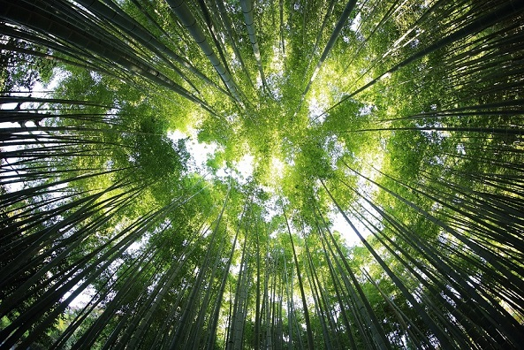

Экология Кузбасса
Решение основных проблем экологии - Наша общая инициатива. Если каждый человек будет соблюдать чистоту и порядок, то экология восстановится и города станут намного чище
УчаствоватьРешение основных проблем экологии - Наша общая инициатива. Если каждый человек будет соблюдать чистоту и порядок, то экология восстановится и города станут намного чище
Участвовать(Соберите в течение 1 минуты 50 единиц мусора.)
Мы помогаем экологии Кузбасса и мотивируем других помочь восстановить природу.
Заводы, угольные шахты и разрезы загрязняют атмосферный воздух и водные объекты, отравляют и разрушают генетический профиль почвы, становятся источником огромного количества опасных отходов и промышленного мусора. Угольная пыль, копоть и мелкие взвешенные частицы, попадающие в атмосферу, могут стать причиной онкологических и других заболеваний сердца и дыхательных путей.
Филиал «ЦЛАТИ по Кемеровской области» г. Новокузнецк
Анализ сточных и природных вод:
Проведение комплексных анализов сточных и природных вод с использованием современного оборудования и методик.
Анализ промышленых выбросов в атмосферу:
Надежное обследование качества воздуха с помощью современных технологий.
Web-страница: https://ko-clati.ru
ЭкоЛэнд
Миссия организации – развитие мусороперерабатывающих технологий для обеспечения чистоты территорий и улучшения качества жизни людей.
«ЭкоЛэнд» представляет собой комплекс инженерных сооружений, принимает в соответствии с лицензией твердые коммунальные отходы от населения, коммерческих предприятий и организаций, осуществляет сортировку мусора с извлечением вторичного сырья и размещение отходов.
Web-страница: https://www.ecoland-nk.ru
ИнЭкА-консалтинг
На сегодняшний день ИнЭкА-консалтинг – современная компания,
предоставляющая широкий спектр консультационных и инжиниринговых услуг
в области охраны окружающей среды и рационального природопользования.
Их успешно реализованы проекты для предприятий черной и цветной металлургии,
угледобывающей и углеперерабатывающей отраслей, горнорудной, нефтеперерабатывающей,
машиностроительной, топливно-энергетической; сельскохозяйственной, пищевой промышленности,
промышленности строительных материалов и собственно строительства, и др.
Web-страница: https://ineca.ru
Важным шагом является внедрение современных технологий для очистки выбросов заводов. Также необходимо инвестировать в развитие экологически чистых отраслей.
Автомобили поглощают О2 из атмосферы и выделяют углекислый газ. Стирая шины об асфальт атмосфера загрязняется резиновой пылью, вредной для здоровья. Кроме того износ шин приводит к выделению частиц микропластика,
которые могут попасть в почву и водоёмы, оказывая негативное воздействие на экосистемы и здоровье человека.
Помимо этого машины загрязняют экологию техническими жидкостями, такими как масло, антифриз и другие химикаты.
Чтобы уменьшить вред, были созданы технологии такие как катализаторы,
системы контроля выбросов и двигатели на альтернативных топливах. Они помогают существенно снижать уровень загрязнения.
Законодательные инициативы: Многие страны вводят строгие экологические нормы для автомобилей,
а также программы утилизации старых автомобилей, чтобы сократить выбросы и улучшить качество воздуха.
Строительство современных очистных сооружений для сточных вод и улучшение качества питьевой воды.
Восстановление нарушенных земель, включая озеленение и создание рекреационных зон.
Создание заповедников, национальных парков и других охраняемых территорий для сохранения редких видов растений и животных.
Рекультивация земель - это важнейшая часть природообустройства. Площадь нарушенных земель растёт с каждым годом. Организации, занимающиеся рекультивацией, не успевают восстановить даже десятой части. Компания «ЭкоКем» в 2017 году провёл биологическую рекультивацию 125 гектаров земли. Это почти 200 футбольных полей, но в общем объёме — капля в море.
Фауна Кемеровской области богата и разнообразна. По разнообразию животного мира в пределах всей Западной Сибири Кемеровская область уступает только Алтаю. Современная фауна позвоночных животных Кемеровской области насчитывает свыше 450 видов, в том числе 73 вида млекопитающих, около 325 видов птиц, 6 – рептилий, 6 – амфибий, более 40 видов рыб и 1 вид круглоротых.
Негативное воздействие на животный мир и среды их обитания, оказывает увеличение площадей разрезов и шахт, что приводит к сокращению площадей обитания животных.
Для защиты природы были созданы парки и заповедники, которые обеспечивают защиту животным и растениям. К сожалению их не достаточно, поэтому необходимо создавать новые.